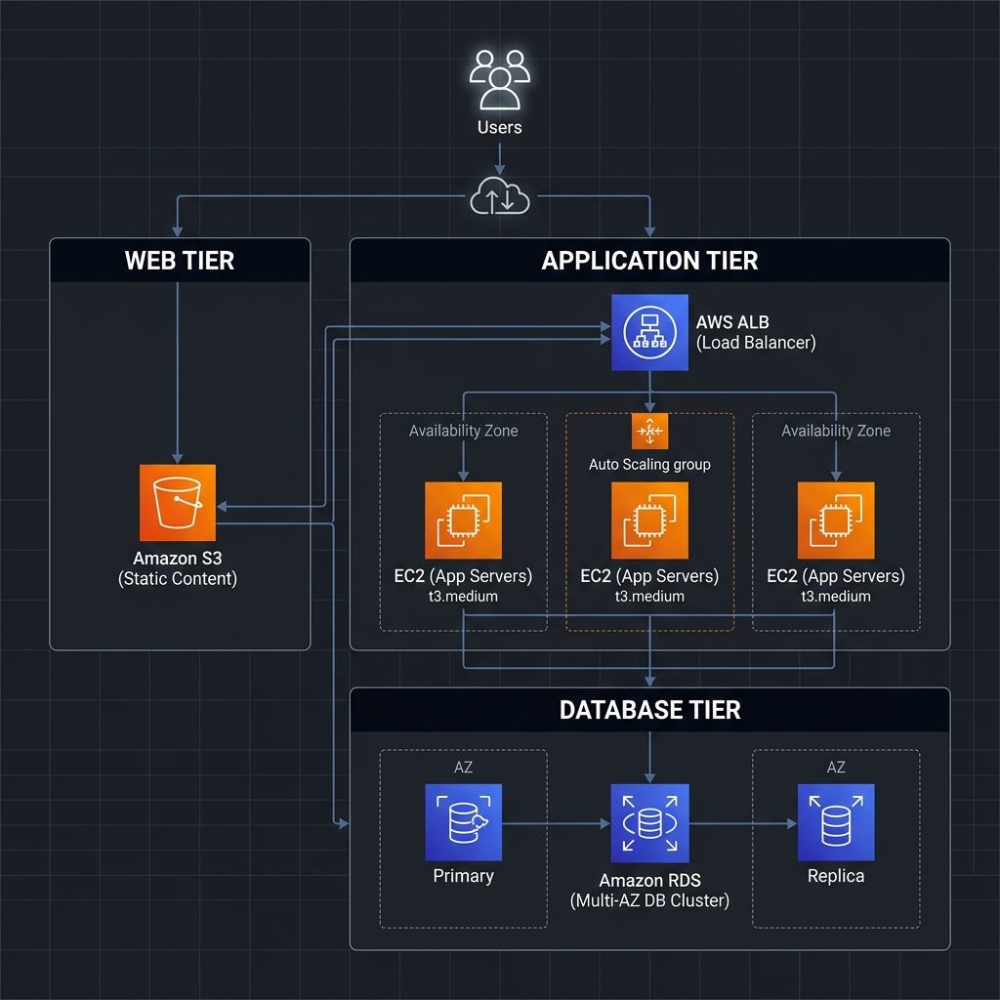

A professional-grade Twitter clone built on a resilient 3-tier AWS infrastructure, delivering real-time social networking at scale.
Users can instantaneously publish "Tweets" up to 280 characters, visible to a global community via a chronological feed.
A robust follow/unfollow system allowing users to build a curated network and personalized content stream.
End-to-end security with JWT-based session management and military-grade Bcrypt password hashing.
Zero-dependency frontend and optimized MySQL query engine ensuring sub-second response times.
Ensuring separation of concerns for maximum maintainability and scalability.
Static assets (HTML5, CSS3, Vanilla JS) hosted on Amazon S3 for ultra-low latency globally.
Node.js and Express.js REST API running on Amazon EC2, handling business rules and authentication.
Amazon RDS (MySQL) providing a secure, highly available relational data store with automated backups and encryption.

Visual Flow: User → S3 | User → ALB → EC2 → RDS
The foundation of a secure cloud environment.
Establishing a private, isolated network space on AWS with custom IP address ranges, subnets, and routing tables.
Operating as stateful virtual firewalls for instances, strictly controlling inbound traffic (e.g., allowing HTTP on port 80 and DB on 3306).
Attributes: id, username, password_hash, created_at. Primary record for identity.
Attributes: id, user_id (FK), content, created_at. Stores micro-blog entries.
Attributes: follower_id (FK), following_id (FK), created_at. A junction table enabling the social network connections.
Provisioning the VPC, creating Public/Private subnets, and attaching an Internet Gateway for external access.
Launching the RDS MySQL instance in a private subnet, guarded by a DB-Security Group.
Developing the Node.js API, implementing JWT Auth, and establishing the database connection pool.
Launching the EC2 instance, installing Git/Node.js, and deploying the backend via PM2.
Uploading the optimized frontend to an S3 bucket and configuring it for Static Website Hosting.
Setting up the Application Load Balancer to target the EC2 cluster and manage security group traffic.
Connecting the frontend to the CloudFront/ALB endpoint and performing full user-lifecycle validation (Signup → Tweet → Feed).
The Bitter App is built for the professional cloud.
Final Review Completed